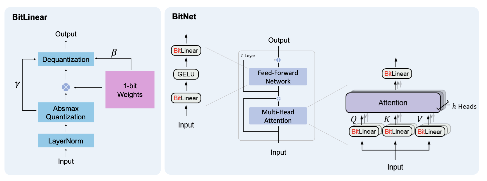
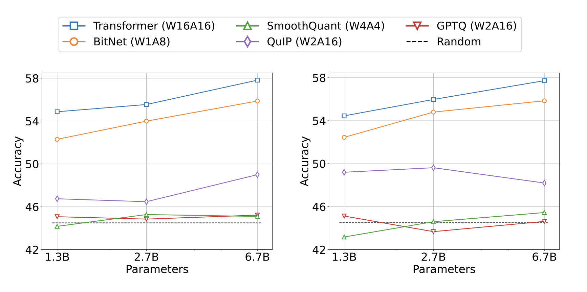
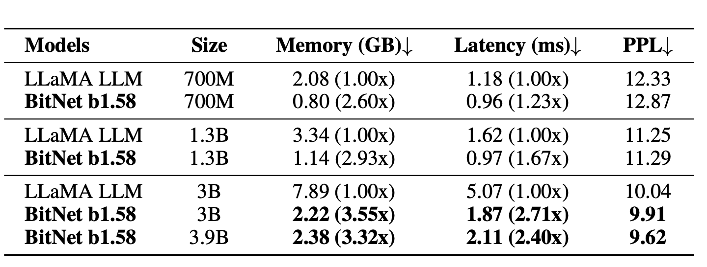
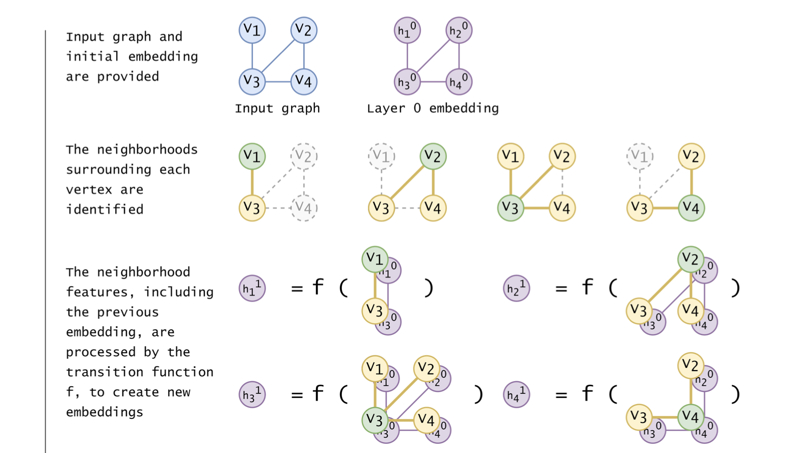
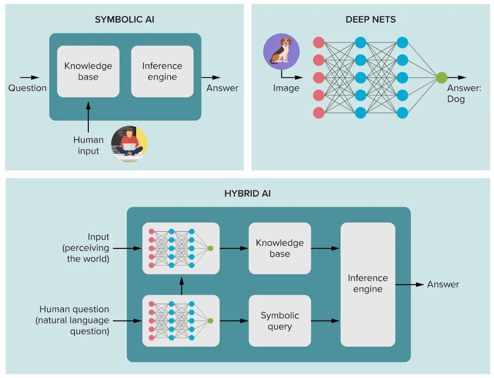
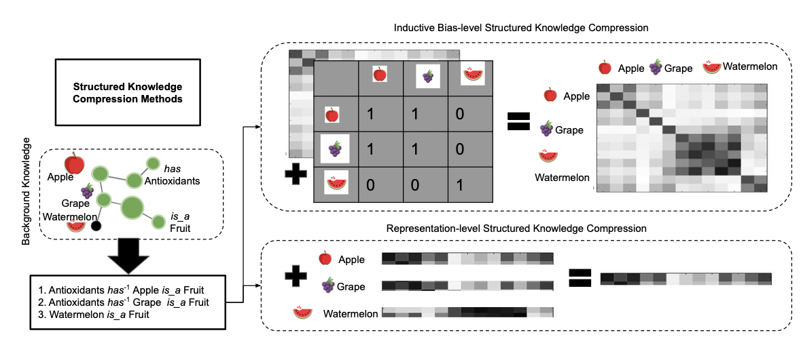

Current frontiers
Lviv University
LLM tree
1-bit LLMs
LLM challenges
- complex deployment
- memory bandwidth issues
- environmental impact
BitNet paper
BitNet: Scaling Transformers for Large Language Models (2023 paper)
1-bit LLMs
One solution - Quantization
In neural network quantization, the weights and activation tensors are stored in lower bit precision than the 16 or 32-bit precision they are usually trained in.
- post-training approach - easier to apply
- quantization-aware training - better accuracy
A floating-point vector \(\boldsymbol{x}\) can be expressed approximately as a scalar multiplied by a vector of integer values: \[ \hat{\boldsymbol{x}} = s_{\boldsymbol{x}} \cdot \boldsymbol{x}_{int} \approx \boldsymbol{x} \]
1-bit LLMs

1-bit LLMs
1-bit LLMs
1-bit LLMs
Hardware accelerator types
- FPGA-based accelerators
- CPU and GPU-based
- ASICs
- In-memory
1-bit LLMs
Groq LPU die
1-bit LLMs
Binarization
An extreme case of quantization, applied to large language models.
Previuosly applied to CNNs and Transformers.
BitNet
Description
BitNet architecture is a Transformer that replaces nn.Linear with BitLinear.
- 1-bit Transformer architecture
- low-precision binary weights
- quantized activations
1-bit LLMs
BitNet trains 1-bit Transformers from scratch, obtaining competitive results in an energy-efficient way.
1-bit LLMs
Left: The computation flow of BitLinear. Right: The architecture of BitNet, consisting of the stacks of attentions and FFNs, where matrix multiplication is implemented as BitLinear.
1-bit LLMs
BitLinear: Binarization
\[ \tilde{W} = sign\left(W-\alpha\right),\\ sign(W_{ij}) = \begin{cases} +1, \; W_{ij} > 0,\\ -1, \; W_{ij} \leq 0\end{cases},\\ \alpha=\frac{1}{nm} \sum\limits{ij}W_{ij},\\ W \in \mathbb{R}^{n \times m} \]
1-bit LLMs
BitLinear: Quantization
Scale activations into the \([-Q_b, Q_b]\) range: \[ \tilde{x} = Quant(x) = Clip(x \times \frac{Q_b}{\gamma}, -Q_b+\epsilon, Q_b - \epsilon),\\ Clip(x,a,b) = \max(a, \min(b,x)), \; \gamma = \|x\|_{\infty}, \; Q_b = 2^{b-1}. \]
1-bit LLMs
BitLinear: Formulation
\[ y = \tilde{W} \tilde{x} = \tilde{W} \times Quant(LN(x)) \times \frac{\beta \gamma}{Q_b},\\ LN(x) = \frac{x-E(x)}{\sqrt{Var(x) + \epsilon}}, \; \beta = \frac{1}{nm}\|W\|_1. \]
1-bit LLMs: Parallelism
Model parallelism with Group Quantization and Normalization
Partitioning matrix multiplication on multiple devices.
1-bit LLMs: Parallelism

Tensor parallelism
1-bit LLMs: Parallelism
Problem
A prerequisite for the existing model parallelism approaches is that the tensors are independent along the partition dimension. However, all of the parameters \(\alpha\), \(\beta\), \(\gamma\), and \(\eta\) are calculated from the whole tensors, breaking the independent prerequisite.
Solution
Divide the weights and activations into groups and then independently estimate each group’s parameters. This way, the parameters can be calculated locally without requiring additional communication. This approachis called Group Quantization.
1-bit LLMs: Parallelism
Group Quantization
Divide the weight matrix \(W\) into \(G\) groups, and estimate parameters independently: \[ \alpha_g = \frac{G}{nm} \sum\limits_{ij} W_{ij}^{(g)}, \\ \beta_g = \frac{G}{nm} \|W^{(g)}\|_1,\\ \gamma_g = \|x^{(g)}\|_{\infty},\\ \eta_g = \min\limits_{ij} x_{ij}^{(g)}. \]
1-bit LLMs
1-bit LLMs
1-bit LLMs
Vanilla transfomers
\[ E_{add} = m \times (n-1) \times p \times \hat{E}_{add},\\ E_{mul} = m \times n \times p \times \hat{E}_{mul}. \]
BitNet
\[ E_{add} = m \times (n-1) \times p \times \hat{E}_{add},\\ E_{mul} = (m \times p + m \times n) \hat{E}_{mul}. \]
1-bit LLMs
Scaling curves of BitNet and FP16 Transformers.
1-bit LLMs
Zero-shot (Left) and few-shot (Right) performance of BitNet and FP16 Transformer against the inference cost.
1-bit LLMs
BitNet is more stable than FP16 Transformer with a same learning rate (Left). The training stability enables BitNet a larger learning rate, resulting in better convergence (Right).
1-bit LLMs
Zero-shot (Left) and few-shot (Right) results for BitNet and the post-training quantization baselines on downstream tasks.
BitNet b1.58
b1.58
BitNet b1.58: every single parameter (or weight) of the LLM is ternary \(\{-1, 0, 1\}\).
Matches the full-precision (i.e., FP16 or BF16) Transformer LLM with the same model size and training tokens in terms of both perplexity and end-task performance, while being significantly more cost-effective in terms of latency, memory, throughput, and energy consumption.
BitNet b1.58
BitNet b1.58
Advantages vs vanilla BitNet
- explicit support for feature filtering, made possible by the inclusion of \(0\) in the model weights
- experiments show that BitNet b1.58 can match full precision (i.e., FP16) baselines in terms of both perplexity and end-task performance, starting from a 3B size, when using the same configuration
BitNet b1.58
b1.58: Quantization
absmean quantization function: first scales the weight matrix by its average absolute value, then rounds each value to the nearest integer among \(\{-1, 0, +1\}\): \[ \tilde{W} = RoundClip\left(\frac{W}{\gamma + \epsilon}, -1, 1\right),\\ RoundClip(x, a, b) = \max(a, \min(b, round(x))), \\ \gamma = \frac{1}{nm} \sum\limits_{ij} |W_{ij}|. \]
BitNet b1.58
Perplexity as well as the cost of BitNet b1.58 and LLaMA LLM.
BitNet b1.58
Decoding latency (Left) and memory consumption (Right) of BitNet b1.58 varying the model size.
BitNet b1.58
Energy consumption of BitNet b1.58 compared to LLaMA LLM at 7nm process nodes. On the left is the components of arithmetic operations energy. On the right is the end-to-end energy cost across different model sizes.
BitNet b1.58
Conclusion
- Mobile device applicability
- CPU-friendliness
- 1-bit Mixture-of-Experts (MoE) LLMs
- 1-bit LLM hardware
Quaternion CNNs
Complex CNNs
- avoid local minima caused by hierarchical structure
- better generalization
- faster learning
Quaternion CNNs
- reduction in number of parameters
- improved classification accuracy
- deal with 4D signals as a single entity
- model 3D transformations
Quaternion CNNs
Definition
Quaternion algebra \(\mathbb{H}\) is the 4-dimensional vector space over \(\mathbb{R}\), generated by the basis \(\{1, \hat{i}, \hat{j}, \hat{k}\}\), and endowed with the following multiplication rules (Hamilton product): \[ (1)(1) = 1,\\ (1)(\hat{i}) = \hat{j} \hat{k} = -\hat{k} \hat{j} = \hat{i},\\ (1)(\hat{j}) = \hat{k} \hat{i} = -\hat{i} \hat{k} = \hat{j},\\ (1)(\hat{k}) = \hat{i} \hat{j} = -\hat{j} \hat{i} = \hat{k},\\ (\hat{i})^2 = (\hat{j})^2 = (\hat{k})^2 = -1. \]
Quaternion CNNs
Multiplication
For two arbitrary quaternions \(\boldsymbol{p} = p_R + p_I \hat{i} + p_J \hat{j} + p_K \hat{k}\) and \(\boldsymbol{q} = q_R + q_I \hat{i} + q_J \hat{j} + q_K \hat{k}\) the multiplication is calculated as follows: \[ \boldsymbol{p} \boldsymbol{q} = p_R q_R - p_I q_I - p_J q_J- p_K q_K + \\ + (p_R q_I + p_I q_R + p_J q_K - p_K q_J) \hat{i} \\ + (p_R q_J - p_I q_K + p_J q_R + p_K q_I) \hat{j} \\ + (p_R q_K + p_I q_J - p_J q_I + p_K q_R) \hat{k}. \]
Quaternion CNNs
Convolutions
\[ (\boldsymbol{w} \ast \boldsymbol{q})(x,y) = \sum\limits_{r=-\frac{L}{2}}^{\frac{L}{2}} \sum\limits_{s=-\frac{L}{2}}^{\frac{L}{2}}\left[\boldsymbol{w}(r,s)\boldsymbol{q}(x-r,y-s)\right], \text{ (left-side)}\\ (\boldsymbol{q} \ast \boldsymbol{w})(x,y) = \sum\limits_{r=-\frac{L}{2}}^{\frac{L}{2}} \sum\limits_{s=-\frac{L}{2}}^{\frac{L}{2}}\left[\boldsymbol{q}(x-r,y-s)\boldsymbol{w}(r,s)\right], \text{ (right-side)}\\ (\boldsymbol{w_{left}} \ast \boldsymbol{q} \ast \boldsymbol{w_{right}})(x,y) = \\ = \sum\limits_{r=-\frac{L}{2}}^{\frac{L}{2}} \sum\limits_{s=-\frac{L}{2}}^{\frac{L}{2}}\left[\boldsymbol{w_{left}}(r,s)\boldsymbol{q}(x-r,y-s)\boldsymbol{w_{right}}(r,s)\right], \text{ (two-sided)} \]
Quaternion CNNs
Chain rule
If \(L\) is a real-valued loss function, and \(\boldsymbol{q} = q_R + q_I \hat{i} + q_J \hat{j} + q_K \hat{k}\), then \[ \frac{\partial L}{\partial \boldsymbol{q}} = \frac{\partial L}{\partial q_R} + \frac{\partial L}{\partial q_I} + \frac{\partial L}{\partial q_J} + \frac{\partial L}{\partial q_K}. \] For \(\boldsymbol{g} = g_R + g_I \hat{i} + g_J \hat{j} + g_K \hat{k}\) we have: \[ \frac{\partial L}{\partial \boldsymbol{g}} = \frac{\partial L}{\partial q_R}\left(\frac{\partial q_R}{\partial g_R} + \frac{\partial q_R}{\partial g_I} \hat{i} + \frac{\partial q_R}{\partial g_J}\hat{j} + \frac{\partial q_R}{\partial g_K}\hat{k} \right) + \\ + \frac{\partial L}{\partial q_I}\left(\frac{\partial q_I}{\partial g_R} + \frac{\partial q_I}{\partial g_I} \hat{i} + \frac{\partial q_I}{\partial g_J}\hat{j} + \frac{\partial q_I}{\partial g_K}\hat{k} \right) + \\ + \frac{\partial L}{\partial q_J}\left(\frac{\partial q_J}{\partial g_R} + \frac{\partial q_J}{\partial g_I} \hat{i} + \frac{\partial q_J}{\partial g_J}\hat{j} + \frac{\partial q_J}{\partial g_K}\hat{k} \right) + \\ + \frac{\partial L}{\partial q_K}\left(\frac{\partial q_K}{\partial g_R} + \frac{\partial q_K}{\partial g_I} \hat{i} + \frac{\partial q_K}{\partial g_J}\hat{j} + \frac{\partial q_K}{\partial g_K}\hat{k} \right) \]
Quaternion CNNs
Reduction in number of parameters
\(y = Wx, \; y \in \mathbb{R}^{4K},\; x \in \mathbb{R}^{4L}, \; W \in \mathbb{R}^{4K \times 4L}\),]
where \(W\) contains \(4 \times 4 \times K \times L\) parameters,
is mapped to
\(\boldsymbol{y} = \boldsymbol{W} \boldsymbol{x}, \; y \in \mathbb{H}^{K},\; x \in \mathbb{H}^{L}, \; W \in \mathbb{H}^{K \times L}\),
where \(\boldsymbol{W}\) contains \(4 \times K \times L\) parameters.
Dynamic Neural Networks
Description
Dynamic networks can adjust their computational path based on the input for better efficiency, making it possible to train models with trillions of parameters and accelerate models in a low-resource setting.
The three types of DNNs dynamically adjust computation timewise, widthwise and depthwise, respectively.
Dynamic Neural Networks
Skimming
Skimming was well-researched in the era of recurrent neural networks (RNN). Skimming models save computation timewise by dynamically allocating computation to different time steps, based on the input tokens.
Mixture-of-Experts
MoE horizontally extends a feedforward neural network (FFNN) with multiple sub-networks. During inference, only one or a few of these sub-networks will be activated for computation, thus can save widthwise computation.
Early exit
Early exit terminates inference at an early layer, without exhausting full computational capacity, thus saves depthwise computation.
Neuroevolution
Definition
Neuroevolution: processes of automated configuration and training of neural networks using evolutionary algorithms.
Evolutionary Algorithms, also known as Evolutionary Computation systems, are nature-inspired stochastic techniques that mimic basic principles of life.
Neuroevolution
Graph Neural Networks
Graph Neural Networks
Graph Neural Networks
Graph Neural Networks
Vanilla DL algorithms
- extract high-level features from data by passing it through non-linear layers
- Euclidean-structured data, such as tabular data, images, text, and audio
- graph data has been largely ignored.
- “rigid” structures: images are typically encoded as fixed-size 2-dimensional grids of pixels, and text as a 1-dimensional sequence of words (or tokens).
Graph Neural Networks

Region Adjacency Graph.
Graph Neural Networks
Use-cases
- recommender systems
- traffic prediction
- Google GraphCast weather forecasting
- relational deep learning
- materials science
- explainable AI
- protein design
Graph Neural Networks
Types
- recurrent GNNs
- convolutional GNNs
- graph autoencoders
- spatial-temporal GNNs
Data examples
- molecules in chemistry
- citation network
- interactions between users and products in e-commerce
Graph Neural Networks
Reed-Kellogg sentence diagram.
Graph Neural Networks
Diagram of an alcohol molecule (left), graph representation with indices (middle), and adjacency matrix (right).
Graph Neural Networks

Graph Learning Tasks.
Graph Neural Networks
Challenges
- graph irregularity
- interdependence
- convolutions difficult to compute
Recurrent Graph Neural Networks
Transition function
Graph is defined as a set of vertices and a set of edges \(G = G(V,E)\).
Transition function \(f\) computes \(k\)-th embeddings \(h_i^k\) at each vertex \(v_i\): in other words, calculates the next representation of a neighborhood from the current representation. \[ h_i^k = \sum\limits_{j \in N_{v_i}} f\left(v_i^F, e_{ij}^F, v_j^F, h_j^{k-1}\right) \] where \(v_i^F\) is the central vertex,
\(N_{v_i}\) is the set of vertex indices for the direct neighbors of \(v_i\),
\(v_i^F\) and \(e_{ij}^F\) are feature vectors for vertices \(v_i\) and edges \(e_{ij}\).
Recurrent Graph Neural Networks
Convergence
\(h_i^0\) can be defined arbitrarily on initialisation.
Banach’s fixed point theorem will guarantee that the subsequently calculated embeddings will converge to some optimal value exponentially (if \(f\) is implemented as a contraction map).
Recurrent Graph Neural Networks
An RGNN forward pass for graph \(G(V,E)\) with \(|V|=4, |E|=4\).
Recurrent Graph Neural Networks
Graph \(G\) goes through \(k\) layers of processing.
Recurrent Graph Neural Networks
Single node aggregates messages from adjacent nodes.
Convolutional Graph Neural Networks
2D Convolution vs. Graph Convolution.
Convolutional Graph Neural Networks
Convolutional Graph Neural Networks
Graph Convolutional Network
GCNs produce embeddings by summing features extracted from each neighboring vertex and then applying non-linearity.
Graph convolutional operation: \[ h_i^{k} = \sigma\left(\sum\limits_{j \in N_{v_i}} \frac{\boldsymbol{W} h_j^{k-1}}{\sqrt{|N_{v_i}||N_{v_j}|}}\right). \]
Graph Convolutional Network
Graph Convolutional Network
A ConvGNN with multiple graph convolutional layers. A graph convolutional layer encapsulates each node’s hidden representation by aggregating feature information from its neighbors. After feature aggregation, a non-linear transformation is applied to the resulted outputs. By stacking multiple layers, the final hidden representation of each node receives messages from a further neighborhood.
Graph Convolutional Network
A ConvGNN with pooling and readout layers for graph classification. A graph convolutional layer is followed by a pooling layer to coarsen a graph into sub-graphs so that node representations on coarsened graphs represent higher graph-level representations. A readout layer summarizes the final graph representation by taking the sum/mean of hidden representations of sub-graphs.
Graph Attention Network
Graph Attention Network
Graph Attention Networks (GATs) extend GCNs: instead of using the size of the neighborhoods to weight the importance of \(v_i\) to \(v_j\), they implicitly calculate the weighting based on the normalised product of an attention mechanism. \[ h_i^{k} = \sigma\left(\sum\limits_{j \in N_{v_i}} \alpha_{ij} \boldsymbol{W} h_j^{k-1}\right),\\ \alpha_{ij} = \frac{\exp\left(att\left(h_i^{k-1}, h_j^{k-1}, e_{ij}\right)\right)}{\sum\limits_{l \in N_{v_i}} \exp\left(att\left(h_i^{k-1}, h_l^{k-1}, e_{il}\right)\right)}. \]
Graph Attention Network
Graph Autoencoders
Description
GAEs represent the application of GNNs (often CGNNs) to autoencoding. The goal of an AE can be summarised as follows: to project the inputs features into a new space (known as the latent space) where the projection has more desirable properties than the input representation.
These properties may include:
- The data being more separable (i.e. classifiable) in the latent space.
- The dimensionality of the dataset being smaller in the latent space than in the input space
- The data being obfuscated for security or privacy concerns in the latent space.
Graph Autoencoders
The architecture for a simple traditional standard AE.
Graph Autoencoders
The architecture for a GAE. The input graph is described by the adjacency matrix \(A\) and the vertex feature matrix \(X\).
Variational Graph Autoencoders
Description
Rather than representing inputs with single points in latent space, variational autoencoders (VAEs) learn to encode inputs as probability distributions in latent space.
An example of a VGAE. Graph inputs are encoded via a GNN into multivariate Guassian parameters (i.e. mean and variance).
Graph Adversarial Techniques
Description
Graph Adversarial Techniques (GAdvTs) use adversarial learning methods whereby an AI model acts as an adversary to another during training to mutually improve the performance of both models in tandem.
A typical approach to adversarial training with VGAEs.
Graph Attention Network
Equations depending on type.
Neurosymbolic AI
AI timeline: recap
Neurosymbolic AI
Neurosymbolic AI
Neurosymbolic AI
Neats vs Scruffies (Norvig)
Neats: AI theories should be grounded in mathematical rigor.
Scruffies: try out lots of ideas, write some programs, and then assess what seems to be working.
Neurosymbolic AI
Human-environment interaction
Perception – transforming sensory inputs from their environment into symbols. Roughly maps to neural networks.
Cognition – mapping symbols to knowledge about the environment for supporting abstraction, reasoning by analogy, and long-term planning. Roughly maps to symbolic AI.
These are Daniel Kahneman’s System 1 and System 2.
Neurosymbolic AI
Why add symbolic AI?
- Symbolic structures represent background knowledge.
- which neural networks don’t have explicit representations for
- thus cannot be evaluated reliably
- or “explain” whether their outcomes adhere to some safety standards
Neurosymbolic AI
Neurosymbolic AI
Deep Learning Criticisms
- brittleness (being susceptible to adversarial attacks),
- lack of explainability (not having a formally defined computational semantics or even intuitive explanation, leading to questions around the trustworthiness of AI systems),
- lack of parsimony (requiring far too much data, computational power at training time or unacceptable levels of energy consumption)
- accountability and impact on humanity.
Neurosymbolic AI
Two types:
- methods that compress structured symbolic knowledge to integrate with neural patterns and reason using the integrated neural patterns (lowering)
- methods that extract information from neural patterns to allow for mapping to structured symbolicknowledge (lifting) and perform symbolic reasoning
Neurosymbolic AI
Neurosymbolic AI
Two methods for compressing knowledge graphs.
Neurosymbolic AI
Challenges
- What is the best way to integrate neural and symbolic architectures?
- How should symbolic structures be represented within neural networks and extracted from them?
- How should common-sense knowledge be learned and reasoned about?
- How can abstract knowledge that is hard to encode logically be handled?
Neurosymbolic AI
Implementations
- Scallop: a language based on Datalog that supports differentiable logical and relational reasoning. Scallop can be integrated in Python and with a PyTorch learning module.
- Logic Tensor Networks: encode logical formulas as neural networks and simultaneously learn term encodings, term weights, and formula weights.
- SymbolicAI: a compositional differentiable programming library.
- Explainable Neural Networks (XNNs): combine neural networks with symbolic hypergraphs and train using a mixture of backpropagation and symbolic learning called induction.